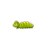

Pilih bibit yang ingin kamu tanam:
Tanamanmu sudah tumbuh besar! Sekarang, ayo kita pelajari bagaimana tanaman bisa tumbuh.
Ini adalah proses fotosintesis, cara tanaman membuat makanannya sendiri dengan bantuan sinar matahari, air, dan udara!